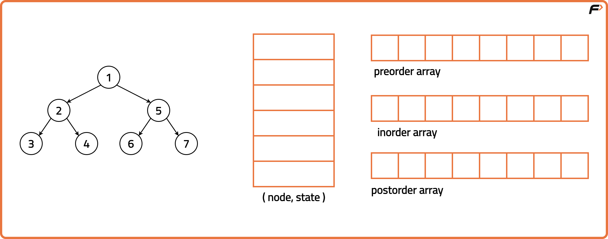
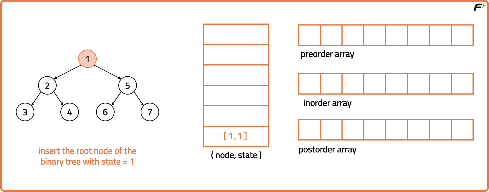
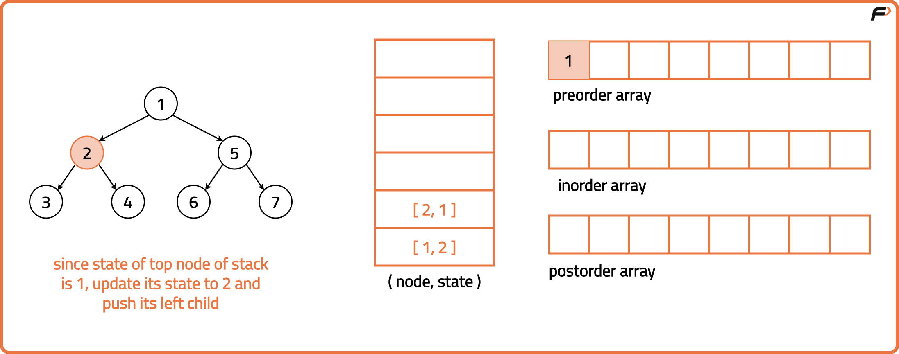
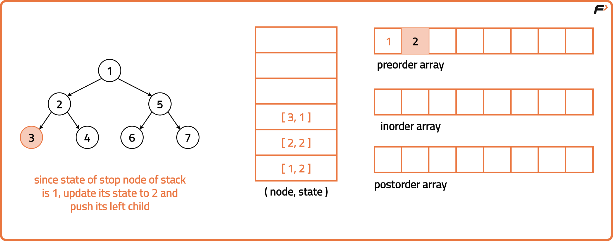
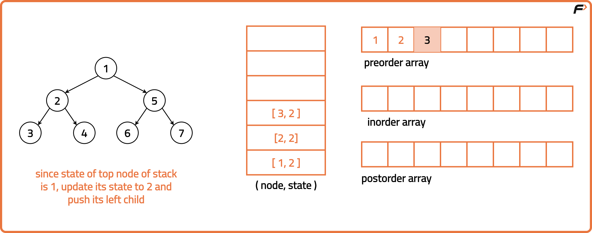
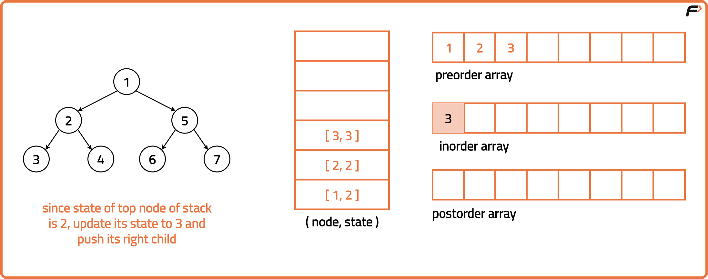
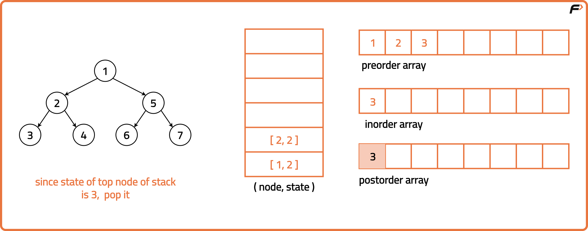
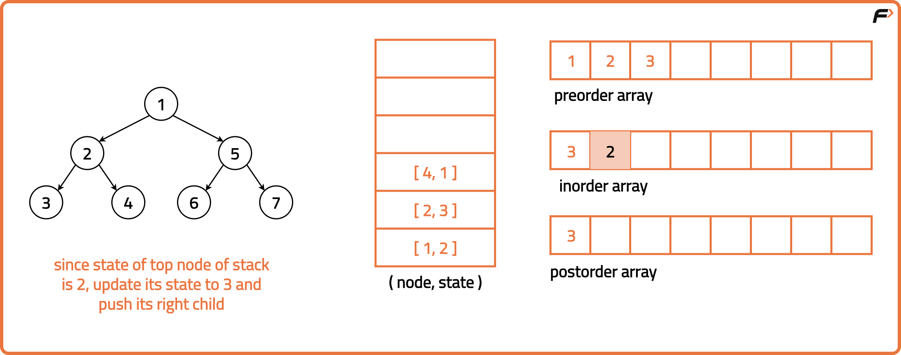
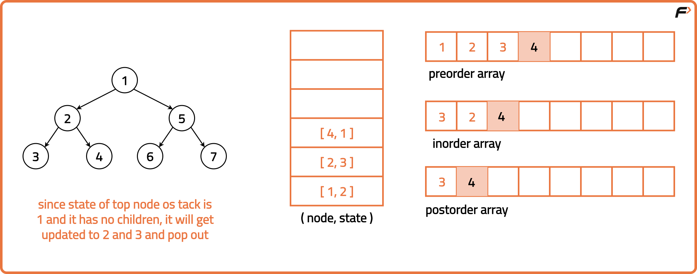
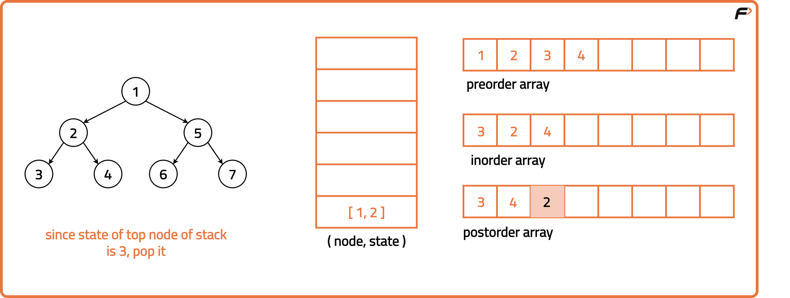

Preorder Inorder Postorder Traversals in One Traversal
Archived from https://takeuforward.org/data-structure/preorder-inorder-postorder-traversals-in-one-traversal/
Problem Statement: Given the root of a Binary Tree, return the preorder, inorder and postorder traversal sequence of the given tree by making just one traversal.
Output: Preorder: [1, 2, 4, 5, 8, 3, 6, 7, 9, 10], Inorder: [4, 2, 8, 5, 1, 6, 3, 9, 7, 10], Postorder: [4, 8, 5, 2, 6, 9, 10, 7, 3, 1] Explanation: The three traversal of the tree are given above.
Disclaimer:
Here is the practice link to help you assess your knowledge better.
It's highly recommend trying to
solve it before looking at the solution.
Approach
Algorithm
This approach traverses the binary tree in a single pass while computing the preorder, inorder and postorder traversals at the same time. A stack is used for state management. The stack keeps track of the traversal state for each node. It stores nodes and their state information allowing the algorithm to resume traversal from intermediate points. For each node, it identifies its state i.e. if it's in the preorder state, it records the node's value and pushes the left child onto the stack. Moving to the inorder state, it records the node's value and pushes the right child onto the stack. Finally, in the post-order state, it stores the node's value and pops the node. As the algorithm executes over each node, it pushes each value in separate arrays for preorder, inorder and postorder traversals depending upon the current order and sequence. Hence, we are able to traverse the tree just once and get all three traversals from it.
Start at the root of the binary tree.Initialise a stack that holds a tree node and an integer value representing its state corresponding to pre order, inorder and postorder. Initialise empty arrays to store the three traversals as well.Check if the tree is empty. If so, return empty traversals.

Push the root node onto the stack along with its state ‘1’ (preorder) to start the traversal.
While the stack isn’t empty, pop the top node of the stack and for each node:
If the state is ‘1’ ie. preorder: store the node’s data in the preorder array and move its state to 2 (inorder) for this node. Push this updated state back onto the stack and push its left child as well.
If the state is ‘2’ ie. inorder: store the node’s data is the inorder array and update its state to 3 (postorder) for this node. Push the updated state back onto the stack and push the right child onto the stack as well.
If the state is ‘3’ ie. postorder: store the node’s data in the postorder array and pop it.
Return the preorder, inorder and postorder array.









Code
#include <bits/stdc++.h>
using namespace std;
// Node structure for the binary tree
struct Node {
int data;
Node* left;
Node* right;
// Constructor to initialize
// the node with a value
Node(int val) : data(val), left(nullptr), right(nullptr) {}
};
// Solution class containing the traversal function
class Solution {
public:
// Function to get the Preorder,
// Inorder and Postorder traversal
// Of Binary Tree in One traversal
vector<vector<int>> preInPostTraversal(Node* root) {
// Vectors to store traversals
vector<int> pre, in, post;
// If the tree is empty,
// return empty traversals
if (root == NULL) {
return {};
}
// Stack to maintain nodes
// and their traversal state
stack<pair<Node*, int>> st;
// Start with the root node
// and state 1 (preorder)
st.push({root, 1});
while (!st.empty()) {
auto it = st.top();
st.pop();
// this is part of pre
if (it.second == 1) {
// Store the node's data
// in the preorder traversal
pre.push_back(it.first->data);
// Move to state 2
// (inorder) for this node
it.second = 2;
// Push the updated state
// back onto the stack
st.push(it);
// Push left child onto
// the stack for processing
if (it.first->left != NULL) {
st.push({it.first->left, 1});
}
}
// this is a part of in
else if (it.second == 2) {
// Store the node's data
// in the inorder traversal
in.push_back(it.first->data);
// Move to state 3
// (postorder) for this node
it.second = 3;
// Push the updated state
// back onto the stack
st.push(it);
// Push right child onto
// the stack for processing
if (it.first->right != NULL) {
st.push({it.first->right, 1});
}
}
// this is part of post
else {
// Store the node's data
// in the postorder traversal
post.push_back(it.first->data);
}
}
// Returning the traversals
vector<vector<int>> result;
result.push_back(pre);
result.push_back(in);
result.push_back(post);
return result;
}
};
// Main function
int main()
{
// Creating a sample binary tree
Node* root = new Node(1);
root->left = new Node(2);
root->right = new Node(3);
root->left->left = new Node(4);
root->left->right = new Node(5);
// Create object of Solution class
Solution sol;
// Getting the pre-order, in-order,
// and post-order traversals
vector<int> pre, in, post;
vector<vector<int>> traversals = sol.preInPostTraversal(root);
// Extracting the traversals
// from the result
pre = traversals[0];
in = traversals[1];
post = traversals[2];
// Printing the traversals
cout << "Preorder traversal: ";
for (int val : pre) {
cout << val << " ";
}
cout << endl;
cout << "Inorder traversal: ";
for (int val : in) {
cout << val << " ";
}
cout << endl;
cout << "Postorder traversal: ";
for (int val : post) {
cout << val << " ";
}
cout << endl;
return 0;
}
import java.util.*;
// Node structure for the binary tree
class Node {
int data;
Node left;
Node right;
// Constructor to initialize
// the node with a value
Node(int val) {
data = val;
left = null;
right = null;
}
}
// Solution class containing the traversal function
class Solution {
// Function to get the Preorder,
// Inorder and Postorder traversal
// Of Binary Tree in One traversal
public List<List<Integer>> preInPostTraversal(Node root) {
// Lists to store traversals
List<Integer> pre = new ArrayList<>();
List<Integer> in = new ArrayList<>();
List<Integer> post = new ArrayList<>();
// If the tree is empty,
// return empty traversals
if (root == null) {
return new ArrayList<>();
}
// Stack to maintain nodes
// and their traversal state
Stack<Pair<Node, Integer>> st = new Stack<>();
// Start with the root node
// and state 1 (preorder)
st.push(new Pair<>(root, 1));
while (!st.empty()) {
Pair<Node, Integer> it = st.pop();
// this is part of pre
if (it.getValue() == 1) {
// Store the node's data
// in the preorder traversal
pre.add(it.getKey().data);
// Move to state 2
// (inorder) for this node
it.setValue(2);
// Push the updated state
// back onto the stack
st.push(it);
// Push left child onto
// the stack for processing
if (it.getKey().left != null) {
st.push(new Pair<>(it.getKey().left, 1));
}
}
// this is a part of in
else if (it.getValue() == 2) {
// Store the node's data
// in the inorder traversal
in.add(it.getKey().data);
// Move to state 3
// (postorder) for this node
it.setValue(3);
// Push the updated state
// back onto the stack
st.push(it);
// Push right child onto
// the stack for processing
if (it.getKey().right != null) {
st.push(new Pair<>(it.getKey().right, 1));
}
}
// this is part of post
else {
// Store the node's data
// in the postorder traversal
post.add(it.getKey().data);
}
}
// Returning the traversals
List<List<Integer>> result = new ArrayList<>();
result.add(pre);
result.add(in);
result.add(post);
return result;
}
// Function to print the elements of a list
public void printList(List<Integer> list) {
for (int num : list) {
System.out.print(num + " ");
}
System.out.println();
}
}
// Main class
public class Main {
public static void main(String[] args) {
// Creating a sample binary tree
Node root = new Node(1);
root.left = new Node(2);
root.right = new Node(3);
root.left.left = new Node(4);
root.left.right = new Node(5);
// Create object of Solution class
Solution sol = new Solution();
// Getting the pre-order, in-order,
// and post-order traversals
List<List<Integer>> traversals = sol.preInPostTraversal(root);
// Extracting the traversals
List<Integer> pre = traversals.get(0);
List<Integer> in = traversals.get(1);
List<Integer> post = traversals.get(2);
// Printing the traversals
System.out.print("Preorder traversal: ");
sol.printList(pre);
System.out.print("Inorder traversal: ");
sol.printList(in);
System.out.print("Postorder traversal: ");
sol.printList(post);
}
}
# Node structure for the binary tree
class Node:
# Constructor to initialize the node with a value
def __init__(self, val):
self.data = val
self.left = None
self.right = None
# Solution class containing the traversal function
class Solution:
# Function to get the Preorder,
# Inorder and Postorder traversal
# Of Binary Tree in One traversal
def preInPostTraversal(self, root):
# Lists to store traversals
pre, ino, post = [], [], []
# If the tree is empty, return empty traversals
if root is None:
return []
# Stack to maintain nodes and their traversal state
st = [(root, 1)]
while st:
node, state = st.pop()
# this is part of pre
if state == 1:
# Store the node's data in the preorder traversal
pre.append(node.data)
# Move to state 2 (inorder) for this node
st.append((node, 2))
# Push left child onto the stack for processing
if node.left:
st.append((node.left, 1))
# this is a part of in
elif state == 2:
# Store the node's data in the inorder traversal
ino.append(node.data)
# Move to state 3 (postorder) for this node
st.append((node, 3))
# Push right child onto the stack for processing
if node.right:
st.append((node.right, 1))
# this is part of post
else:
# Store the node's data in the postorder traversal
post.append(node.data)
# Returning the traversals
return [pre, ino, post]
# Main function
if __name__ == "__main__":
# Creating a sample binary tree
root = Node(1)
root.left = Node(2)
root.right = Node(3)
root.left.left = Node(4)
root.left.right = Node(5)
# Create object of Solution class
sol = Solution()
# Getting the traversals
traversals = sol.preInPostTraversal(root)
# Extracting and printing the traversals
pre = traversals[0]
ino = traversals[1]
post = traversals[2]
print("Preorder traversal:", *pre)
print("Inorder traversal:", *ino)
print("Postorder traversal:", *post)
// Node structure for the binary tree
class Node {
// Constructor to initialize the node with a value
constructor(val) {
this.data = val;
this.left = null;
this.right = null;
}
}
// Solution class containing the traversal function
class Solution {
// Function to get the Preorder,
// Inorder and Postorder traversal
// Of Binary Tree in One traversal
preInPostTraversal(root) {
// Arrays to store traversals
let pre = [], ino = [], post = [];
// If the tree is empty, return empty traversals
if (root === null) return [];
// Stack to maintain nodes and their traversal state
let st = [[root, 1]];
while (st.length > 0) {
let [node, state] = st.pop();
// this is part of pre
if (state === 1) {
// Store the node's data in the preorder traversal
pre.push(node.data);
// Move to state 2 (inorder) for this node
st.push([node, 2]);
// Push left child onto the stack for processing
if (node.left !== null) {
st.push([node.left, 1]);
}
}
// this is a part of in
else if (state === 2) {
// Store the node's data in the inorder traversal
ino.push(node.data);
// Move to state 3 (postorder) for this node
st.push([node, 3]);
// Push right child onto the stack for processing
if (node.right !== null) {
st.push([node.right, 1]);
}
}
// this is part of post
else {
// Store the node's data in the postorder traversal
post.push(node.data);
}
}
// Returning the traversals
return [pre, ino, post];
}
}
// Main driver code
function main() {
// Creating a sample binary tree
let root = new Node(1);
root.left = new Node(2);
root.right = new Node(3);
root.left.left = new Node(4);
root.left.right = new Node(5);
// Create object of Solution class
let sol = new Solution();
// Getting the traversals
let [pre, ino, post] = sol.preInPostTraversal(root);
// Printing the traversals
console.log("Preorder traversal:", pre.join(" "));
console.log("Inorder traversal:", ino.join(" "));
console.log("Postorder traversal:", post.join(" "));
}
// Call the main function
main();
Complexity Analysis.
Time Complexity: O(3*N), we process each node thrice, once for every traversal. Space Complexity: O(4*N), extra space used for storing postorder, inorder, preorder traversal and stack.